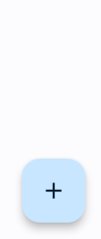
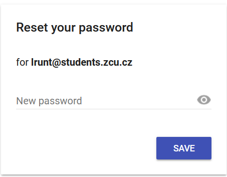
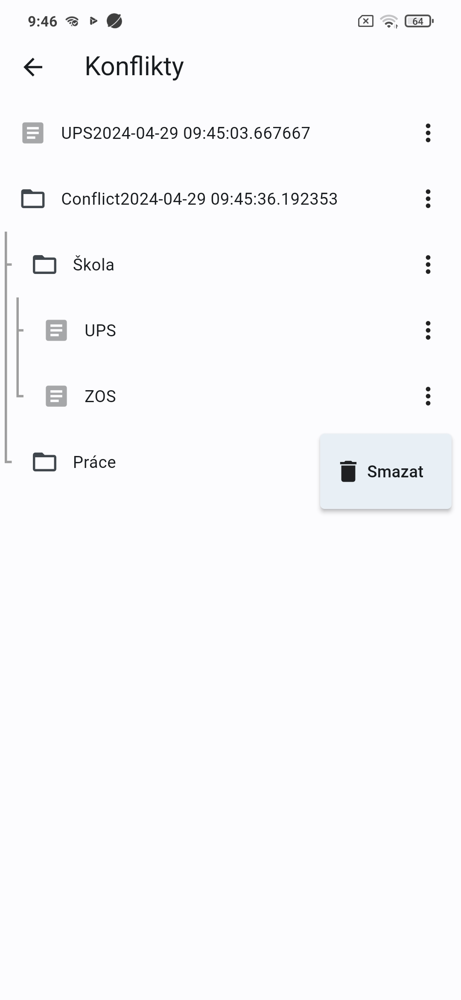

Úvod
Děkuji, že jste si vybrali Notes pro správu vašich poznámek a úkolů. V tomto manuálu vám ukáži, jak se aplikace ovládá, abyste mohli plně využít její potenciál pro vytváření, ukládání a organizování vašich poznámek.
Spuštění aplikace
Při spuštění aplikace se zobrazí inicializační obrazovka s logem aplikace. Tato obrazovka indikuje, že se aplikace inicializuje.

Když je aplikace inicializována, zobrazí se uživateli domovská obrazovka. Domovská obrazovka je zobrazena na následujícím obrázku.
 Na této stránce se nacházejí dvě tlačítka:
Na této stránce se nacházejí dvě tlačítka:
- Tři čáry - Otevírá vysouvací menu
- Ozubené kolo - Otevírá nastavení aplikace
Vysouvací menu
Vysouvací menu obsahuje hlavičku uživatele, hierarchickou strukturu dat a tlačítko synchronizace s datem posledního synchronizování v případě přihlášeného uživatele.

Adresář
Tato obrazovka zobrazuje seznam souborů. Se soubory lze pracovat stejně jako ve stromové struktuře. Na konco každého souboru jsou tři tešky které otevírají menu. Při kliknutí na soubor je uživatel přesměrován do tohoto souboru.

V pravém dolním rohu se nachází plovoucí tlačítko. Pokud na něj uživatel klikne je zobrazí se tři tlačíka:
- Poznámka - Vytváří novou poznámku v aktuálním adresáři
- Adresář - Vytváří nový adresář v aktuálním adresáři
- Červený křížek - Skrývá předchozí tlačítka


Editor formátovaného textu
Editor, který je určený ke čtení, vytváření a úpravě poznámek. V aplikačním panelu je zobrazena cesta k poznámce. Pod aplikačním panelem se nachází ovládací panel, který lze plovoucím tlačítkem v pravé dolní části obrazovky skrýt či zobrazit.
Na následujících obrázcích je zobrazen vzhled tohoto editoru.


Registrace
Na stránku registrace se dostanete skrze vysouvací menu, po stisknutí tlačítka registrace. Při registraci máte na výběr vybrat si registraci pomocí kombinace emailu a hesla nebo Google účtem.

Přihlášení
Na stránku registrace se dostanete skrze vysouvací menu, po stisknutí tlačítka přihlášení. Na následujícím obrázku je zobrazen obrázek přihlašovací obrazovkou s popsáním jednotlivých částí této obrazovky.

- Návrat na předchozí stránku
- Textové pole pro zadání emailu
- Textové pole pro zadání hesla
- Odkaz odkazunící na stránku pro obnovení hesla
- Tlačítko pro přihlášení
- Odkaz vedoucí na stránku registrace nového uživatele
- Tlačítko pro přihlášení pomocí Google účtu
Obnovení hesla
Může se stát, že uživatel zapomene heslo. Pro takový případ je zde možnost změny hesla. Na následujícím obrázku je zobrazena obrazovka pro změnu hesla.

Na této stránce se nachází textové pole pro zadání e-mailu, na který nám bude poslán e-mail s odkazem pro změnu hesla.
Po stiskuntí tlačítka Odeslat e-mail bude na zadanou adresu odeslán email. Tento email je zobrazen na dalším obrázku.

Při stisknutí odkazu v příchozím e-mailu bude uživatel přesměrován na stránku s textovým polem a tlačítkem pro uložení nového hesla. Tato stránka je zobrazena na dalším obrázku.

Nastavení
Na stránku nastavení se uživatel může dostat pomocí ozubeného kola na hlavní stránce. Na následujícím obrázku je zobrazeno, jak vypadá stránka nastavení.

V následující části budou popsány jednotlivé možnosti nastavení
Jazyk
Položka jazyk v nastavení mění lokalizaci aplikace. V aktuální verzi aplikace jsou dostupné dva jazyky, a to čeština a angličtina.
Tmavý mód
Tato položka přepíná vzhlednový režim aplikace. V aplikaci existuje světlý a tmavý mód, který se dá přepínat tímto spínačem v nastavení.
Zobrazit konflikty
Pokud je detekován konflikt je uložena lokální verze konfliktních dat. Tato data lze zobrazit tlačítkem zobraz u možnosti Zobrazit konflikty.
Vzhled konfliktové stánky je zobrazen na dalším snímku.

Na této stránkce jsou zobrazeny všechny konflikty. Každý konflikt je pojmenován jménem souboru a časovou značkou, kdy konflikt vznikl.
Uživatel může tato data prohlížet a mazat.
Smazat lokální data aplikace
Tato možnost maže všechna data aplikace. Po stisknutí se zobrazí dialogové okno, zda si je uživatel jist, že chce všechna tato data smazat. Následně jsou data smazána a aplikace je ve stavu prvního otevření.
Tato funkce sloužila primárně pro testovací účely, avšak je ponechána, kdyby chtěl uživatel dostat aplikaci do stavu prvního spuštění.
Informace o aplikaci
Zobrazí dialogové okno s informacemi o aplikaci jako je autor, vezre aplikace a datum vydání.

Manuál k aplikaci
Tato volba presměrovává na tuto stánku.